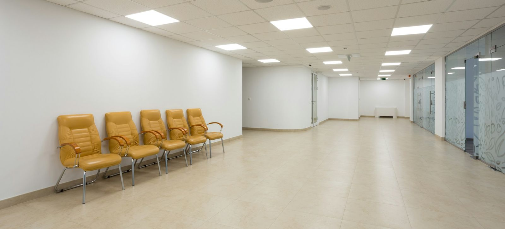
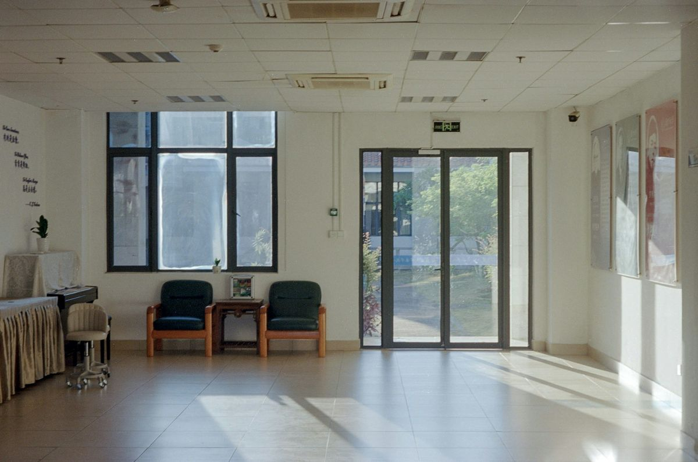
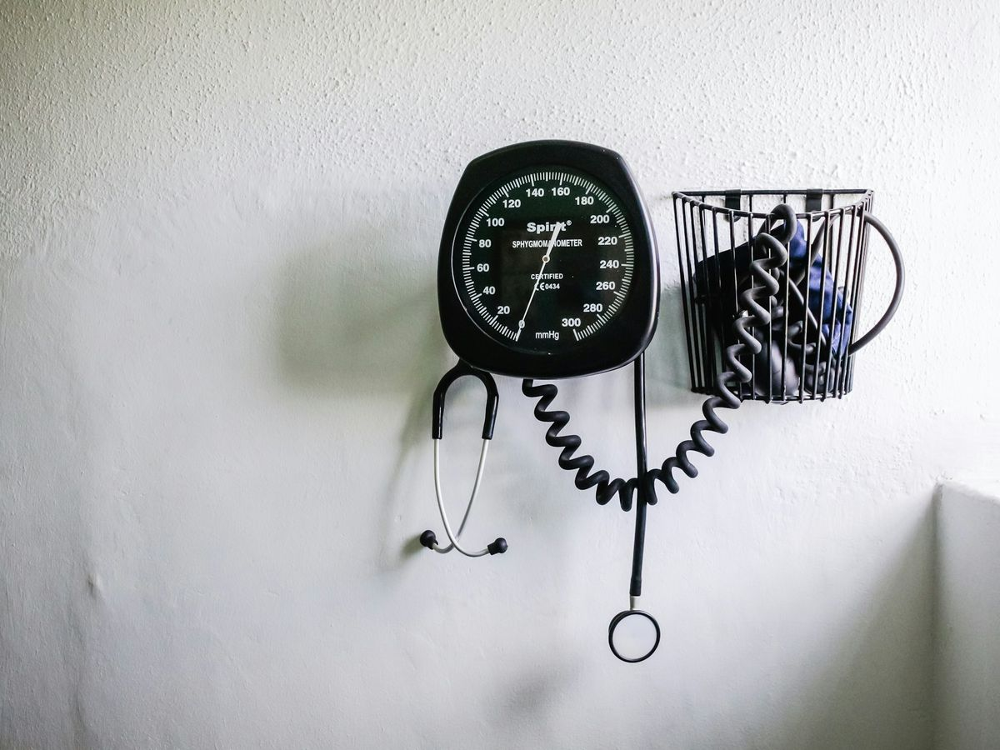

Hausärztliche Versorgung
- Akute und chronische Erkrankungen
- Koordination mit Fachärzten und Kliniken
- Dauermedikation als eRezept
Seit 1977 in Epe
Michael Knüvener und Stefan Rittmeyer, Fachärzte für Innere Medizin. Antoniusstraße 1.

Die Anmeldung meldet sich bei Ihnen. Notfälle immer telefonisch.
Wunschzeit angeben, die Anmeldung meldet sich.
Termin anfragen →Dauermedikation als eRezept, Abholung in Ihrer Apotheke.
Rezept anfragen →Zum Facharzt oder zur Physiotherapie.
Überweisung anfragen →Grippe und COVID ab Oktober, dienstags und mittwochs.
Impftermin anfragen →Führerschein, Jugendschutz, Versicherung, Schule.
Bescheinigung anfragen →Organisatorisches, Unterlagen, Rückruf.
Nachricht schreiben →Termine nach telefonischer Absprache.
| Montag | 9–12 Uhr und 16–18 Uhr |
|---|---|
| Dienstag | 9–12 Uhr und 16–18 Uhr |
| Mittwoch | 9–12 Uhr |
| Donnerstag | 9–12 Uhr und 17–19 Uhr |
| Freitag | 9–12 Uhr |
Geschlossen? Bereitschaftsdienst 116117, Dienstpraxen Gronau und Ahaus.

Hausärztliche und internistische Versorgung für Erwachsene.

Individuelle Gesundheitsleistungen sind Privatleistungen. Preise erfahren Sie an der Anmeldung.
Zwei Fachärzte, ein Team an der Anmeldung.
Facharzt für Innere Medizin · Praxisinhaber
Führt die Praxis seit 2023 in zweiter Generation.
Platzhalter für ein Foto.
Facharzt für Innere Medizin und Geriatrie · seit März 2026
Sprechstunden montags und dienstags vormittags nach Vereinbarung.
Platzhalter für ein Foto.
Anmeldung, Labor, EKG, Lungenfunktion, Impfungen
Ihre Ansprechpartnerinnen am Telefon und an der Anmeldung.
Platzhalter für ein Foto.
Impfungen, Urlaub, Vertretung.
Grippe ab 60, COVID ab 75 oder bei chronischen Erkrankungen. Dienstags und mittwochs, Impfpass mitbringen. Impftermin anfragen
Seit Montag, 26. Oktober, Sprechstunden wieder zu den bekannten Zeiten.
Facharzt für Innere Medizin und Geriatrie, Sprechstunden montags und dienstags vormittags.
Dauerrezepte liegen ab 16 Uhr oder am Folgetag ab 10 Uhr in Ihrer Apotheke bereit.
Eine Hausarztpraxis in zweiter Generation.
Dr. med. Udo Knüvener eröffnet am 7. Juni die „Fachpraxis für innere Krankheiten“ in Epe.
Nach fast 45 Jahren übergibt er die Praxis an seinen Sohn Michael Knüvener.
Stefan Rittmeyer verstärkt das Team. Die Praxis bildet im Weiterbildungsverbund Gronau und Epe mit aus.
Geprüfte Quellen, kein Ersatz für das Gespräch in der Praxis.
Nahe dem Kirchplatz in Epe. Parkplätze vor der Praxis.
Medizinische Anliegen bitte telefonisch.